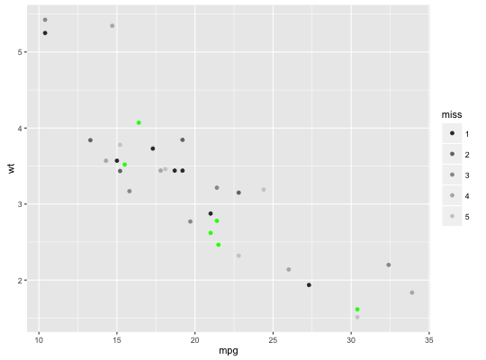

scale_colour_grey(..., start = 0.2, end = 0.8, na.value = "red")scale_fill_grey(..., start = 0.2, end = 0.8, na.value = "red")
discrete_scale
to control name, limits, breaks, labels and so forth.Based on gray.colors
p <- ggplot(mtcars, aes(mpg, wt)) + geom_point(aes(colour = factor(cyl))) p + scale_colour_grey()p + scale_colour_grey(end = 0)# You may want to turn off the pale grey background with this scale p + scale_colour_grey() + theme_bw()# Colour of missing values is controlled with na.value: miss <- factor(sample(c(NA, 1:5), nrow(mtcars), replace = TRUE)) ggplot(mtcars, aes(mpg, wt)) + geom_point(aes(colour = miss)) + scale_colour_grey()ggplot(mtcars, aes(mpg, wt)) + geom_point(aes(colour = miss)) + scale_colour_grey(na.value = "green")